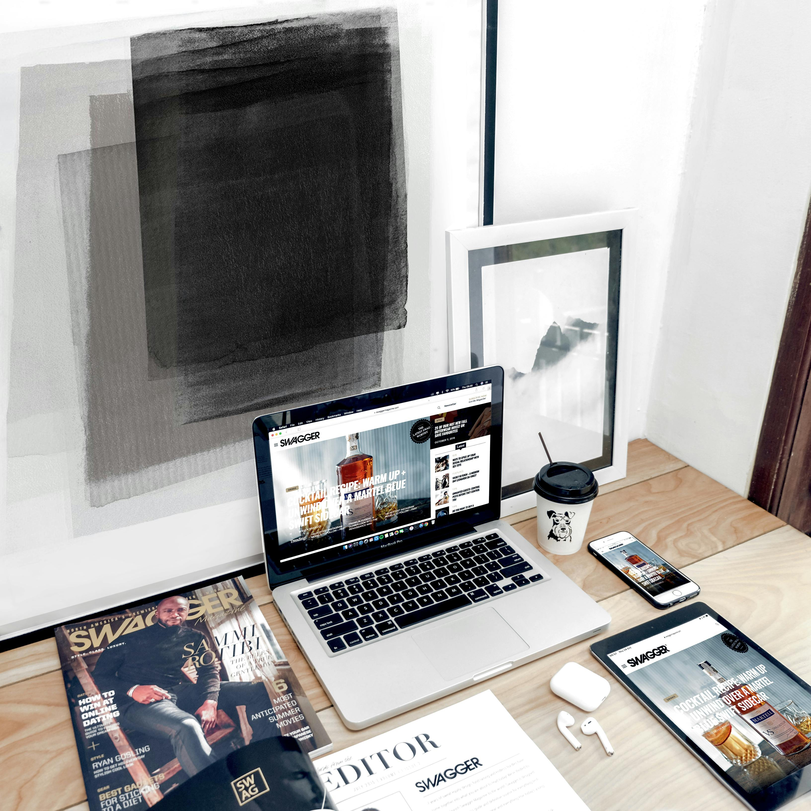
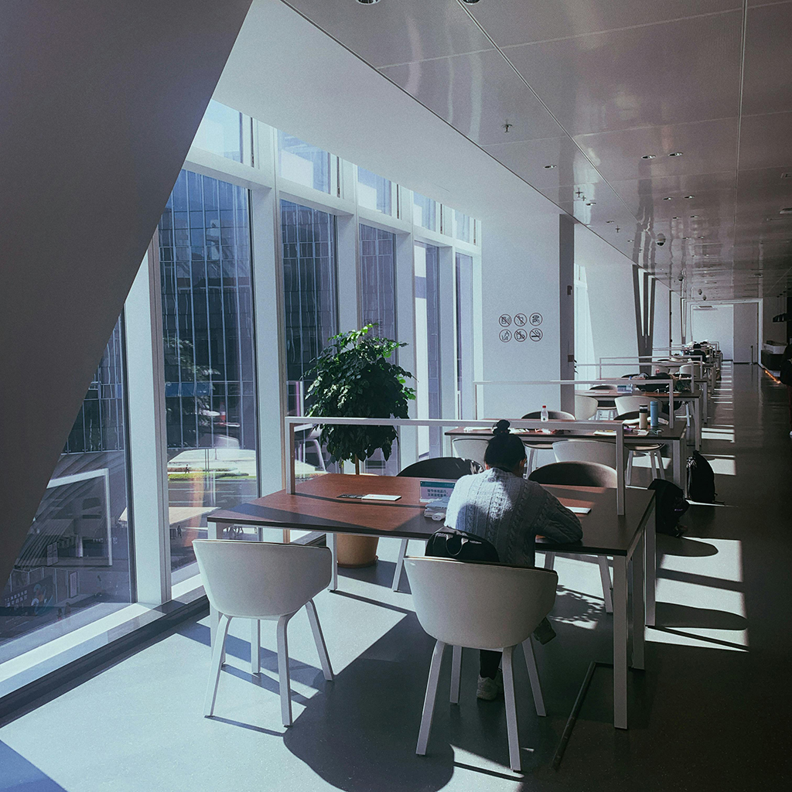
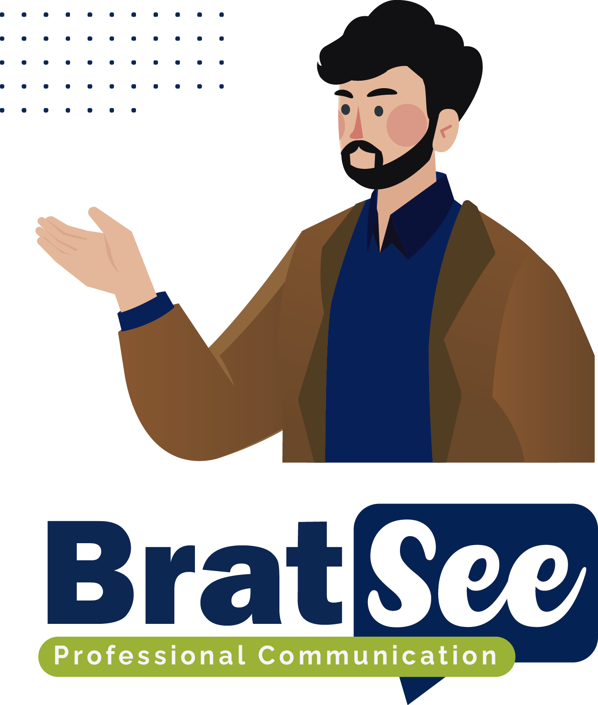

A Journey Through Creativity and Learning
Tracing the Path from Graphic Design to Software Development
From self-taught graphic designer to English teacher, entrepreneur, digital marketer, quality assurance specialist, and finally a software developer, my career has been a diverse adventure. Each step has shaped my understanding of design, language, business, and technology, fueling my passion for solving problems and creating digital solutions. This page tells the story of my continuous evolution and learning, a testament to where determination and passion can lead.
Navigating Change, Embracing Digital Frontiers
From Graphic Design to Digital Marketing and Software Development
Embarking on a career that spanned graphic design, English teaching, and entrepreneurship, I ventured into the dynamic world of digital marketing, which became a bridge to my current role in software development. This journey has been a testament to adaptability, persistence, and the power of digital innovation. Here, I unfold my path of continuous learning and evolution, showcasing the crucial role of embracing change in driving personal and professional development.
Harnessing Creativity in Graphic Design
Blending Art and Technology for Six Creative Years
My six-year journey in graphic design has been a rich tapestry of creating for both print and digital media, where I honed my skills in visual communication, typography, layout design, and branding. With an intermediate to advanced proficiency in Adobe Illustrator and Photoshop, and basic knowledge in After Effects, Soundbooth, and Premiere Pro, I've crafted compelling content for social media and various marketing campaigns. This experience in understanding user engagement and visual storytelling has been invaluable in my transition to software development, where design thinking and user experience are paramount.
Mastery in Communication: The English Teaching Era
Decade of Developing Leadership and Interpersonal Skills
Over a decade of teaching English, I've not only imparted language skills but also mastered the art of communication, leadership, and conducting engaging meetings. These years have polished my abilities to speak confidently to groups, facilitating open and effective discussions. Essential soft skills such as active listening, empathy, adaptability, and teamwork have been at the core of my teaching philosophy. These skills have seamlessly transitioned into my role in software development, particularly in collaborative settings like Scrum, where clear communication and team synergy are pivotal.
Digital Marketing: Pivoting in the Pandemic
From Concept to Campaign: A Self-Taught Journey
During the pandemic's onset, I saw an opportunity to reshape my career path and embarked on learning digital marketing. Over two years, I delved into the intricacies of digital campaign structuring, SEO, SEM, and embraced low-code web development platforms like WordPress, creating five diverse and functional websites. I mastered the art of the marketing funnel, understanding the nuances of driving engagement and conversion through effective metrics. This journey not only broadened my skill set but also cemented my adaptability and eagerness to explore new professional horizons.

Bratsee: A Pandemic-Era Venture
Evolving Ideas, Enduring Vision
Conceived amidst the pandemic's challenges, Bratsee began as a beacon of change, undergoing several transformations from its name to its core concept, yet its essence remained untouched. This project became the catalyst for my expansive learning journey in digital marketing, web design, and entrepreneurship. It was through Bratsee that I first encountered web development, leading me down a path of continual growth and discovery. Despite its evolutions, Bratsee stands testament to the power of perseverance and adaptability in the face of uncertainty, embodying the lessons learned and the enduring vision that drives me forward.
Elevating Standards in Quality Assurance
From Learning to Leading in Quality Control
Determined to ensure the highest quality for Bratsee, my project, I delved into the world of Quality Assurance, arming myself with ISTQB knowledge and engaging in freelance roles across online platforms. My journey culminated between May 2023 and May 2024, when I served as a QA and Business Analyst for a groundbreaking pharmaceutical project in the LATAM region at Johnson & Johnson. Utilizing Scrum within the SaFe framework, our team successfully navigated the complexities of a GxP project critical to patient safety and regulatory authority compliance, overseeing the reporting of adverse events across Latin America. This role not only underscored the importance of meticulous quality control but also highlighted the value of adaptability and teamwork in achieving ambitious goals.
Diving Into Software Development
From Curiosity to Professional Passion
My journey into software development began amidst my endeavors with digital marketing and quality assurance. Initially intrigued by low-code platforms like WordPress and Elementor, my fascination quickly evolved beyond the surface. Diving deeper into the intricacies of quality assurance processes and test cases, I found myself captivated by the code that underpins it all. Starting with small projects for friends and relatives, I gradually expanded my scope, crafting websites and exploring the vastness of development. In 2023, I embarked on two pivotal studies: a 2.5-year program in Software Analysis and Development, preparing me for roles across the full stack development spectrum, and a specialized course in Frontend Engineering, honing my skills in web technologies including HTML, CSS, JavaScript, and React. This path is not merely a career but a passion that drives me daily, offering endless opportunities for growth and learning in the dynamic field of software development.